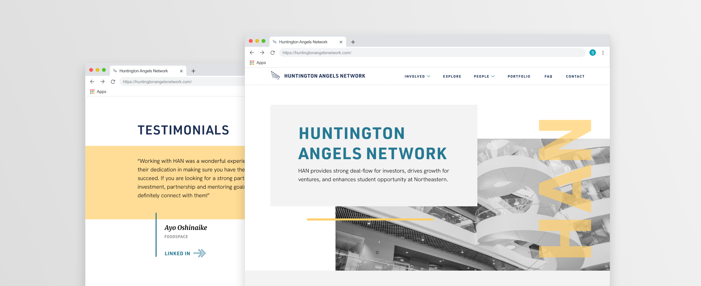
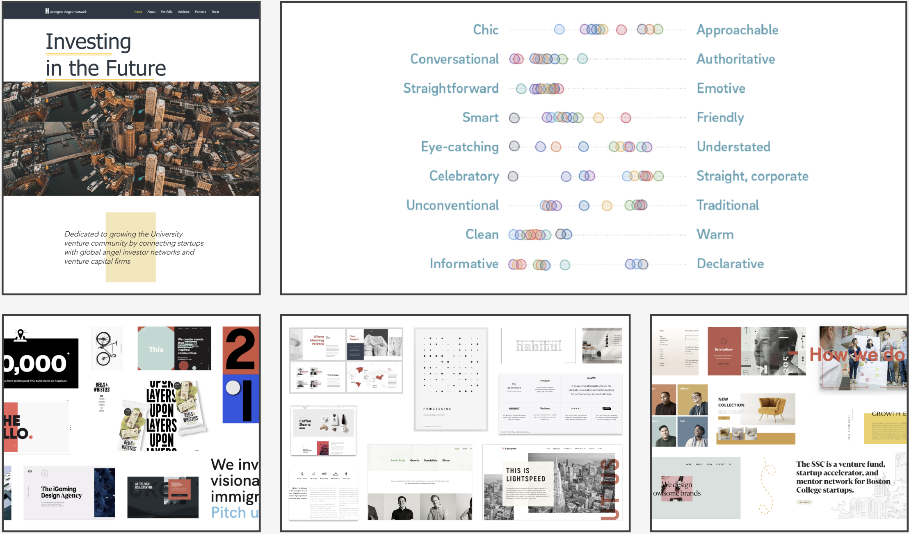
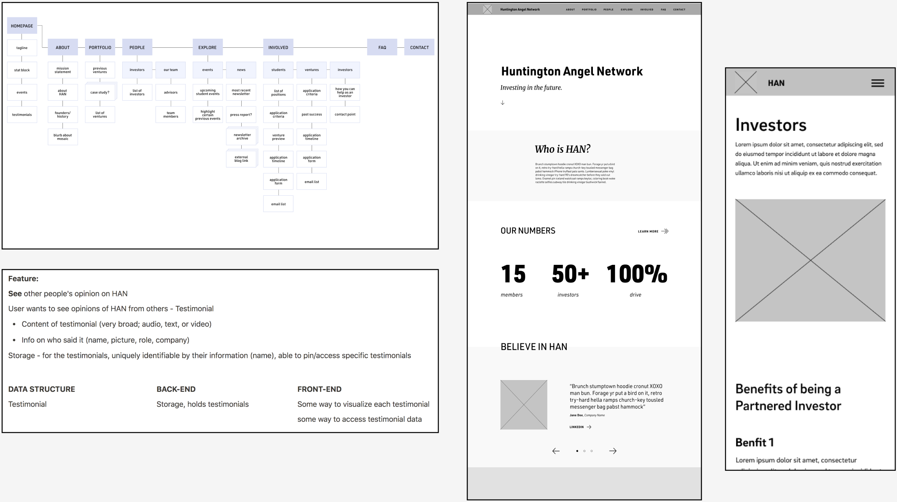
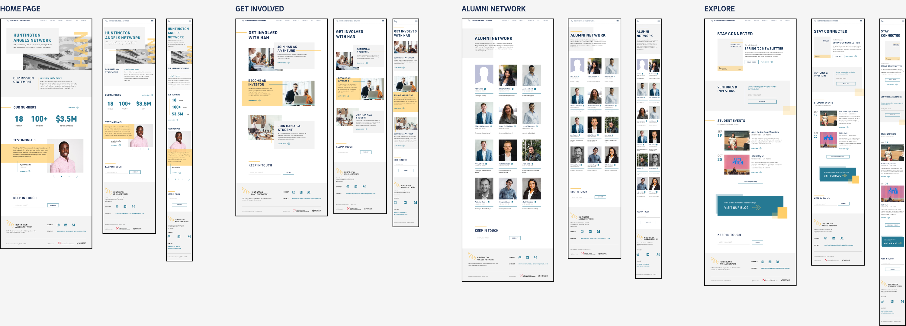

Huntington Angels Network
a brand refresh for a venture capital organization at Northeastern University
project context
In fall of 2020, I worked at Scout, Northeastern's student led Network, as both a developer and designer. With four other designers and one other developer, my team and I were tasked with rebranding and developing a new marketing website for Northeastern’s student venture capital organization Huntington Angels Network (HAN).
Our client's main goal was to have a brand that felt both credible and professional. As a university organization that connects students with professional investors & ventures, creating a sense of trustworthiness was necessary. With these values in mind, my team delivered a minimalistic brand design with a responsive website.
Check out the live site here: huntingtonangelsnetwork.com
pre-work analysis
Prior to creating HAN’s new vision, my team members, clients, and I did a bunch of branding exercises and user research. We looked through their old website to find what worked and what didn’t. We asked ourselves what we envisioned the new brand would emote. We later created moodboards that showcased the different directions HAN could pursue.
We also began to create user stories and research some tech stack options, which not only aided us for future steps in development but also gave us a perspective of each of the stakeholder’s needs. For our tech stack, we ended up choosing Gatsby + Contentful + Styled Components due to their smaller user base and free to use setup.
honing in on a design
After receiving feedback from our moodboards, we created a design strategy as a pivoted and focused visual direction. While we created a clean, minimalistic look, we also wanted to include a sense of liveliness and bolder personality. We accomplished that through the pops of yellows & blues, the subtle use of italicized serifs, and geometric overlays.

first steps of creating the site
Instead of diving head first in redesigning HAN’s site, we knew that it was much more important making sure all our content was there, organized and easy to navigate. We charted a site map, drafted lo-fi wireframes, and prepared data structures as blueprints for our final round of design and development.
combining two and two together
Once we got confirmation that all the needed components were there on our lo-fis, we then combined them with the colors and visuals from our design strategy to create hi-fi wireframes. We created hi-fi screens for desktop, tablet, and mobile. As one of the two developers on our team, I was also tasked on creating the site. This meant installing our tech stack, implementing data structures on the CMS, populating data into the CMS, and ultimately coding the site up.
final notes
I’m very proud with how this website turned out. I learned how much time could be saved in the long run by having a plan in place. By formulating user stories, feature analyses, data structures, and lo-fi sketches, my team was able to find confusing areas and have them answered quickly. The planning phases helped us make sure our deliverables every week had no unexpected surprises. In the end, the HAN team was very impressed and happy with their new brand and marketing site.